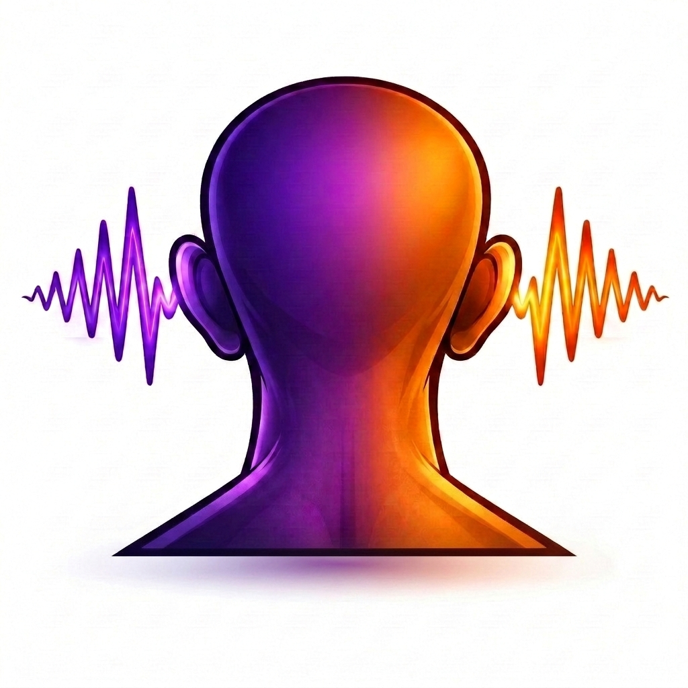
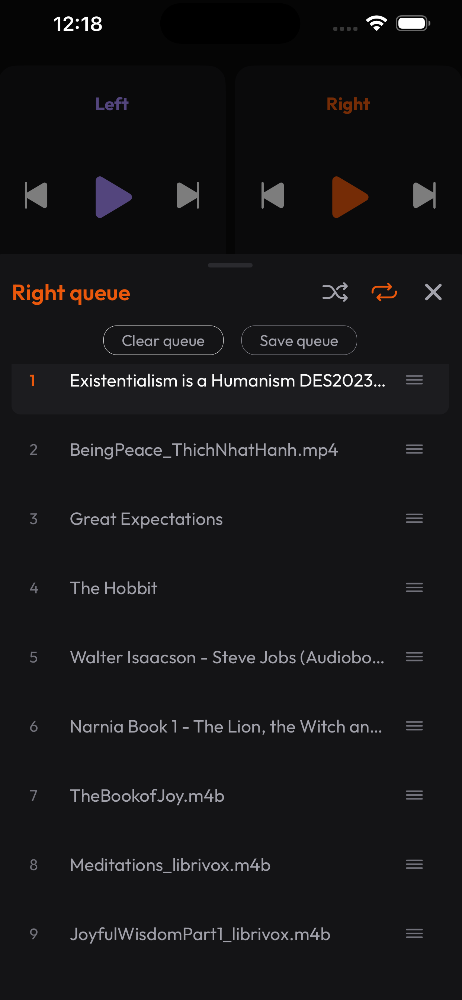
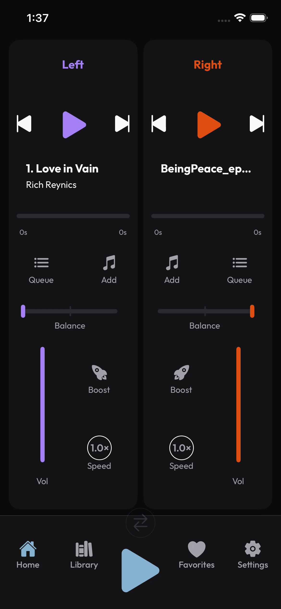
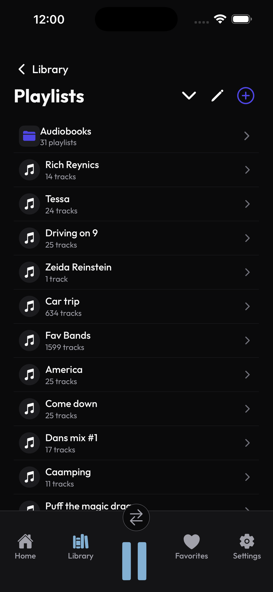

Pick two streams.
Music for energy. Words for ideas.

dicoticExplore the power of divided listening
Music in one ear. Audiobooks, podcasts, or news in the other. Swap sides with a single tap Reset your focus and discover your potential. Designed for headphones
See dicotic in action



Three steps to divided listening
dicotic gives you a gentle, controllable way to explore how your brain responds to multiple streams at once—no hacks, no noise, just experience.
Music for energy. Words for ideas.
Send rhythm to one side and language to the other.
A single tap re-centers your attention.
Why it matters
Blend rhythm and information so your mind doesn't drift. Keep just enough input to stay engaged without feeling overwhelmed.
Turn commutes, workouts, and chores into low-friction learning sessions. Keep your body on autopilot while your mind explores.
Noticing overload? Swap sides, mute a stream, or center both ears with a single action. Take back control of your attention.
Everyone's attention works a little differently. dicotic gives you a playground to learn what your mind likes best.
Where dicotic fits into your life
Lo-fi beats in one ear, a calm voice explaining concepts in the other. Keep your mind occupied just enough to stay on task.
High-energy tracks plus language lessons, news, or lectures. Arrive where you're going with new ideas already loaded.
Let your headphones augment what you see and hear around you. Play tunes to match your surroundings on one side, learn from your favorite authors on the other.
If you're the kind of person who needs “just the right amount of noise” to think, dicotic gives you new knobs to turn.
Learn by watching
Use this space for quick walkthroughs: getting started with dicotic, setting up your first split, and experimenting with different contexts.
A short overview of the app and how to pick your first couple streams.
Add track from your local files or Apple Music.
Tap to boost. Hold to reset.
Behind the idea
Some people focus best when part of their mind is anchored by rhythm while another part tracks words. dicotic doesn't claim magic shortcuts or brain hacks—it simply gives you an intentional way to explore how your own attention behaves.
By separating streams into left and right ears, you can learn when your brain wants simplicity, when it enjoys a gentle challenge, and when it's time to reset. Over time, those experiences become a kind of map of how you live best.